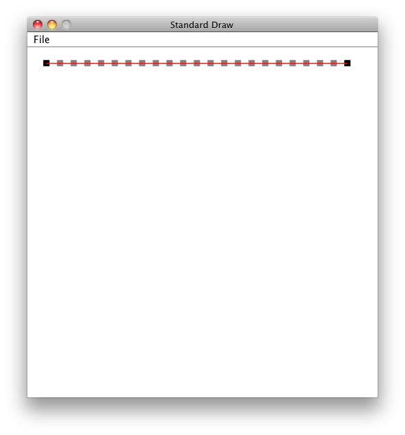
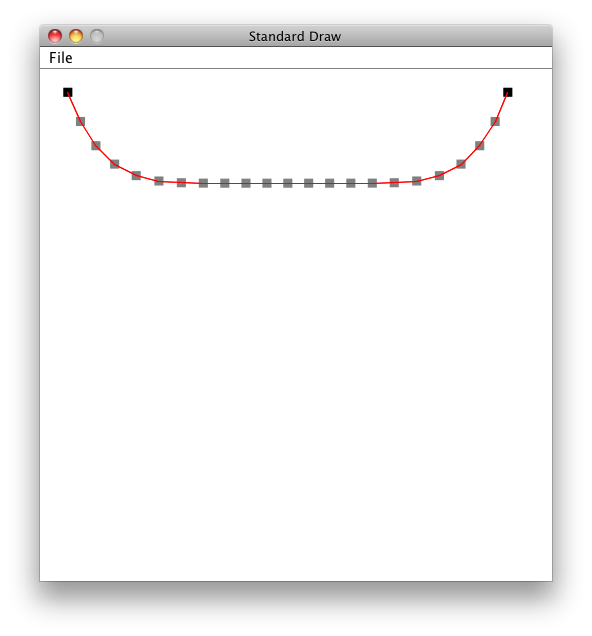
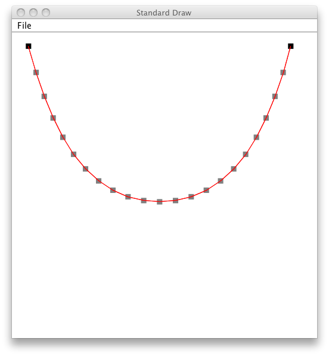
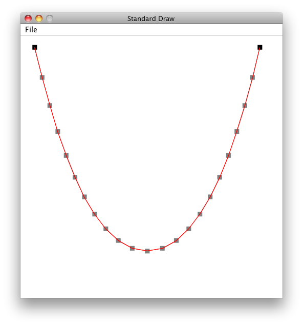

Extension for Module 9:
Extension 9.1: More ListItem Methods - the List Goes On (4 points)
##Procedure
In the file ListItem.java, write static methods that satisfy the following specifications. Remember that static methods are called directly on the ListItem class itself, rather than on ListItem objects.
Create JUnit tests to test each method thoroughly.
Recall that to call static methods of the ListItem class from your JUnit test methods, you can specify the class name each time, as in ListItem.evenElements(ls). Alternatively, you can save characters and just write evenElements(ls) if you import the static methods from the ListItem class by adding the line
import static lab9.ListItem.*;
near the top of your file, after the package declaration.
As you work through these exercises, be sure to use recursion or iteration as indicated. Where not indicated, you may choose either approach. Each method will take references to list items as parameters. Unless otherwise specified, you should handle the case of a null parameter value.
-
A recursive static procedure
pairwiseSumPARAMETERS: two ListItem references, ls1 an ls2 RETURN VALUE: a ListItem at the front of a new list containing the pairwise sum of the elements in ls1 and ls2 for example, given lists ( 3 2 6 ) and ( 1 4 2), the return value would be the list ( 4 6 8 )You may assume that the given lists are the same length.
-
An iterative static procedure
smallElementsPARAMETERS: a ListItem reference, ls an integer n RETURN VALUE: a new list identical to the given list, except that it contains no occurrences of numbers greater than n. for example, given input list ( 3 2 6 3 4 ) and 3, the return value would be the list ( 3 2 3 ) -
An iterative static procedure
scalePARAMETERS: a ListItem reference, ls an integer n RETURN VALUE: none (void) the procedure **mutates** the list by multiplying each number in the list by the given number n. for example, given input lists ( 3 2 6 3 4) and the number 3, the modified list would be ( 9 6 18 9 12 ). -
A static procedure
insertAfterPARAMETERS: a ListItem reference, ls two integers i and j (not equal) RETURN VALUE: none (void) the procedure **mutates** the list by inserting the given number i after each occurrence of j. for example, given input lists ( 3 2 6 3 4) and the number 5 and 3, the modified list would be ( 3 5 2 6 3 5 4 ).Be sure to do this by creating new list items only for the inserted numbers. Modifying the
nextreferences in the existing ListItem objects to insert the new items in the right places. Don't create a whole new list structure.
Submitting your work
To submit your work, contact the instructor or a TA. They will walk you through the submission process. Be prepared to show them the work that you have done and answer their questions about it!
Extension 9.2: Reversing Lists (3 points)
In the ListItem class, write methods with the following specifications, and write thorough JUnit tests to check that they work correctly.
-
A recursive method
reverseRecursethat takes no parameters and returns a ListItem. The return value should be a new list structure that contains the same numbers as this list, but in the reverse order. (Hint: Use a helper procedure with an extra parameter that accumulates the reversed list.) -
An iterative method
reverseLoopthat takes no parameters and returns a ListItem. The return value should be a new list structure that contains the same numbers as this list, but in the reverse order. (Hint: Create a loop variable that's a ListItem reference to keep track of your current position in the list.)
Submitting your work
To submit your work, contact the instructor or a TA. They will walk you through the submission process. Be prepared to show them the work that you have done and answer their questions about it!
Extension 9.3: Falling Arches (12 points)
##Overview: Computers are powerful problem-solving tools, and simulation is a common technique foranalyzing systems whose behavior is beyond the capabilities of simple models or closed formulae. Weather prediction and fluid flow are examples of such systems. In the work described here, you will simulate the shape of a suspended cable by constructing the cable from masses and springs and allowing gravity and the laws of Newtonian physics to act upon the masses.
More specifically, you construct a model for simulating the shape of a catenary: the shape of our beloved St. Louis Gateway Arch.
##Goals:
By the end of this extension, you should
- Gain more experiences with arrays and lists
- Gain more experience with iteration
- Understand the nature of simulation and approximation in computation science
##Before starting:
- Read over this entire document before you start.
- Ask questions of the instructor and TAs.
##Problem description:
Long before our city began its expansion into the NFL, the pioneers of our country expanded to the West, crossing the Mississippi and braving the perils of midwestern life. As a monument to their efforts, the City of St. Louis erected Eero Saarinen's famous Arch in 1965. Its grace, beauty, and elegance have inspired poets, musicians, and artists of the past five decades.
It's time that CSE131 had its turn.
A catenary is the shape made when you suspend a string by holding its ends, and let gravity pull on the string. If you look at a telephone wire strung between two poles, the shape you see is a catenary, though not one that would necessarily garner artistic praise.
It turns out that our Arch is also a catenary, but situated upside down.
How are we to simulate an catenary acting on a string? If we look really closely at the string, we see that it is composed of a series of mass points, with each adjacent pair of masses connected by a spring.
With gravity turned off, the picture is as follows:

As the simulation proceeds, the catenary takes on the following shapes:



##Notes
-
You are given an
ArchControllerandArchclass to facilitate your running this program as a GUI. -
Your effort goes into the
Archclass, specifically:-
The constructor must set up the simulation.
-
The
round()method must simulate one round of gravity and springs acting on each mass.
You can use any data type to represent the masses and/or springs. Wisely you must choose, young padawan, for this choice will affect how much work you will have to put in for the remainder of this extension.
-
-
To obtain consistent results, it is suggested that you simulate movement in two phases within a given round:
-
First compute where each mass should move at the end of this round, but do not move them. This way, the other mass's positions are computed consistently.
-
Once the new position of all masses are known, have each mass move to its new position.
It is preferred that you do not account for the momentum of the masses. In the real world, when the masses fall, if they are held together by springs, they would bounce up and down until eventually the springs turn the kinetic energy of the masses into heat through internal friction. In this code, even if you account for momentum AND friction, it is very hard to get the masses to settle. So instead, for every
round()calculate where the mass should be based on the force of gravity and the springs, and move it there. -
-
Think of the resolution of this project in terms of the number of masses that are used in the simulation. Make sure that the sum of the masses is constant, no matter how many masses you use, so that the cable has constant total mass no matter how many point masses (rectangles in the picturse) you use in the simulation.
-
A spring obeys Hook's Law.
-
To receive credit, you must be able to change certain properties of the simulation. See the list of questions below for more detail, and be sure to parameterizse your simulation so that these are easily changed.
##To receive credit
Be prepared to answer the following questions when you demo:
-
What happens when the spring constant is large?
-
Why do the masses continue to wiggle, even after the Arch seems finished?
-
What happens when you have more masses, but the same gravity and spring constant?
-
What happens when gravity increases?
Extra fun: Modify your solution so that the Arch starts at the bottom of the screen, and falls up instead of down.
Submitting your work
To submit your work, contact the instructor or a TA. They will walk you through the submission process. Be prepared to show them the work that you have done and answer their questions about it!
Extension 9.4: Trees and a Map ADT (10 points)
Note: This extension is especially recommended for those students who wish to continue with computer science studies. Others are welcome to complete it as well.
Update your repository as usual to get the trees package in your extensions folder.
##Two implementations of a Map interface
In this lab, you will implement a map abstract data type two different ways. Both of the implementations will provide the same functionality, but will differ in their structure and efficiency.
Think of a “map” ADT as a relation between a domain and a range. For example, a telephone directory is a map from names to telephone numbers. The domain is all possible names, and the range is all possible phone numbers. As another example, this kind of data structure could be useful, for example, to map stock names to their current prices in a stock trading application. Each entry in the map is a pair of elements, one from the domain and one from the range. Often, the domain and range are different types, but that is not a requirement. The test cases for this lab will map strings to integers, but your implementations should be able to handle any data types.
Implementation notes:
-
One purpose of this lab is for you to learn how to design and implement different data structures. Therefore, do not use any of the data structures that are already provided by Java in the
java.utilpackage. Build your data structures from scratch. -
To compare objects, such as String values, use the provided
compareTomethod of the Comparable interface. For String values, this method uses lexicographic ordering (dictionary ordering); thecompareTomethod takes as its parameter another String, and returns an integer whose value is:- negative if this string is less than the parameter,
- zero if this string is equal to the parameter, or
- positive if this string is greater than the parameter.
-
Do not use the
==operator to compare objects for equality. When==is used on objects, it evaluates to true if both sides of the comparison refer to the same exact memory location (i.e., it's the exact same object). For example, even if two String objects contain the same text, the==test for equality on the two objects would returnfalseif they are not the same object.
##Directions:
-
Open the provided file Map.java and study the provided code in that file. Notice that the file does not contain a class definition, but instead contains an interface. Recall that an interface is just a collection of method names with parameter types and return types. It cannot be instantiated, because it doesn't actually contain implementations of any of the methods. That is, the methods have no bodies.
-
Open the provided file OrderedListMap.java and read the provided code. Notice the line
public class OrderedListMap<K extends Comparable<K>,V> implements Mapnear the top of the file. The phrase “implements Map” means that this class conforms to the Map interface. In other words, this class must define all of the methods contained in the Map interface, and the compiler will check that this is indeed the case.
Notice also that the key type
Kis anyComparableobject. This will allow you to call thecompareTomethod on the keys. The values associated with key can be objects of any type. -
In general, Java's support for interfaces provides the power to define the interface of an ADT and write programs in terms of that interface. Then, you can implement the ADT in different ways and use those implementations interchangably. For example, look at the testAllMethods procedure in the provided file MapTest.java. Notice that the method calls another method to create a Map object. Any object returned by that method must implement the Map interface, and so the testAllMethods procedure may call any of the methods in the Map interface on the object returned. There are two other JUnit test cases provided, one for OrderedListMap and one for TreeMap. Each of these extends the MapTest and so each of them inherits testAllMethods. Each of these test cases overrides the method that creates the Map, to create an OrderedListMap and a TreeMap, respectively. So, when you run each of those test cases, they will use the same test method, but will use different type of object.
-
Study again the interface definition in the file Map.java, paying attention to the documentation for each method.
Complete the implementation in the file OrderedListMap.java, being sure to satisfy the specification given in the interface file. For your internal representation, use a linked list, where each list item contains a domain element (e.g., a
String), a range element (e.g., anInteger), and a next pointer (to another list item). If you like, you can use dummy nodes at the beginning and end of the list. Also, feel free to create a doubly linked list (with previous pointers) if you find that easier.One of the representation invariants for your OrderedListMap implementation should be that the list is kept in alphabetically sorted order according to the domain element. Use the fact that the list is kept in sorted order in order to improve the efficiency of the methods.
You can write additional test cases, but when you are finished, the provided test case
OrderedListMapTestshould run correctly. Also, be sure to verify that your toString methods produce the correct output. Verify that your list is being kept in sorted order. -
Complete the implementation in the file TreeMap.java, being sure to satisfy the specification given in the interface file. To do this, you'll need to define a
TreeNodeclass. Each node in the tree will have a domain element, a range element, a (possibly null) left subtree and a (possibly null) right subtree. Your implementation should satisfy the representation invariant that for each node, all strings in the left subtree are alphabetically less, and all strings in the right subtree are alphabetically greater. Make use of this invariant to improve the efficiency of the methods.Your
removemethod will require deleting elements from the tree. The usual way to delete nodes from a binary search tree is somewhat complicated, as discussed in class. Therefore, we are leaving the proper implementation of delete as an optional extension for this lab. If you don't want to do that extension, then you can implement delete by adding a boolean instance variable calleddeletedto your tree nodes. If you delete an element from the tree, you can just setdeletedto true. Then, when a search reaches that node for thegetorcontainsmethod, you can act as if the element is not in the tree.Implement the
toStringmethod so that it returns a readable representation of the tree. Display the tree sideways, with the root of the tree at the left edge of the page. Your return String should have one node per line, something like this:(quack,4) (oink,5) (moo,7) (meow,2) () (bow wow,8) (baa,5)This is called an * in-order traversal* of the tree, since one subtree is traversed first, then the node itself, and then the other subtree. You can use the special character
\'\n\'in a String to cause the terminal to advance to a new line as it prints the string.Hint: The depth of the node in the tree determines how much to indent. So, use a helper procedure with a String parameter that keeps track of the leading spaces for each line of output. Start it out with the value
""and then concatenate a String of spaces to create the indentation String parameter for the recursive calls on both subtrees. If you want, you can use the special tab character\'\t\'instead of multiple spaces. -
You can write additional test cases, but when you are finished, the provided test case TreeMapTest should run correctly. Also, be sure to verify that your toString methods produce the correct output. Verify that your list is being kept in sorted order. Look at the printed values to be sure that the representation invariant is being preserved by your implementation.
Submitting your work
To submit your work, contact the instructor or a TA. They will walk you through the submission process. Be prepared to show them the work that you have done and answer their questions about it!
Extension 9.5: Binary Search Tree Deletion (5 points)
Implement deletion properly in your binary search tree. In particular, suppose you want to remove node x from the tree.
- If x is a leaf, let x's parent refer to null instead.
- If x has only one child, let x's parent refer to x's child instead.
- In the difficult case, when x has two children, you can replace x in the tree by the rightmost element in x's left subtree.
Submitting your work
To submit your work, contact the instructor or a TA. They will walk you through the submission process. Be prepared to show them the work that you have done and answer their questions about it!